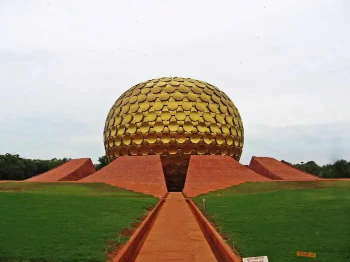

uroville is a universal township in the making for a population of up to 50,000 people from around the world.
A The concept of Auroville – an ideal township devoted to an experiment in human unity – came to the Mother as early as the 1930